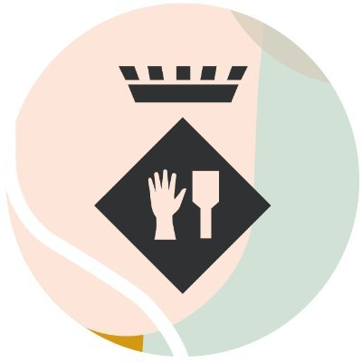
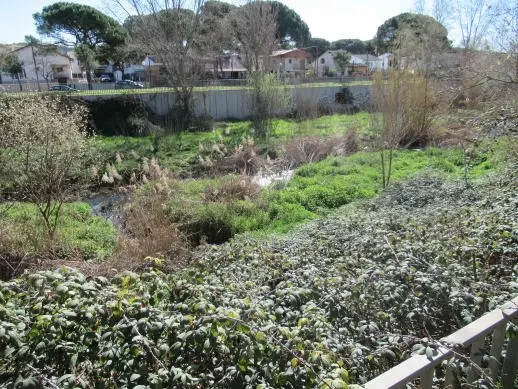
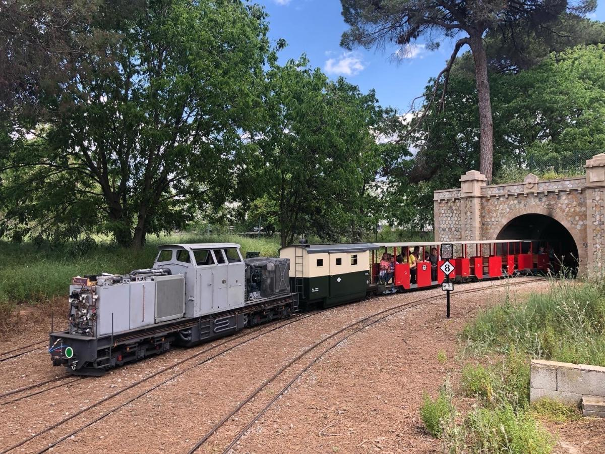
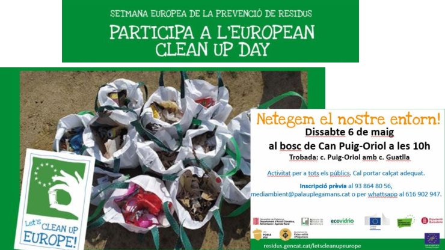

Galería de paisajes naturales y proyectos sostenibles del municipio
Descubre la belleza natural de Palau-solità i Plegamans y sus esfuerzos para un futuro más sostenible. Esta galería muestra los paisajes más emblemáticos del municipio, los proyectos ambientales impulsados por el Ayuntamiento y los eventos comunitarios dedicados a la preservación del medio ambiente.

CLICKParte de la Riera de Caldes que pasa por el municipio de Palau Solità.

CLICKParque del tren conocido coloquialmente que puedes realizar un paseo por todo el parque mediante un tren de carbón.

CLICKIniciativa comunitaria para realizar actividades en conjunto con el pueblo para mantener limpias las áreas naturales.